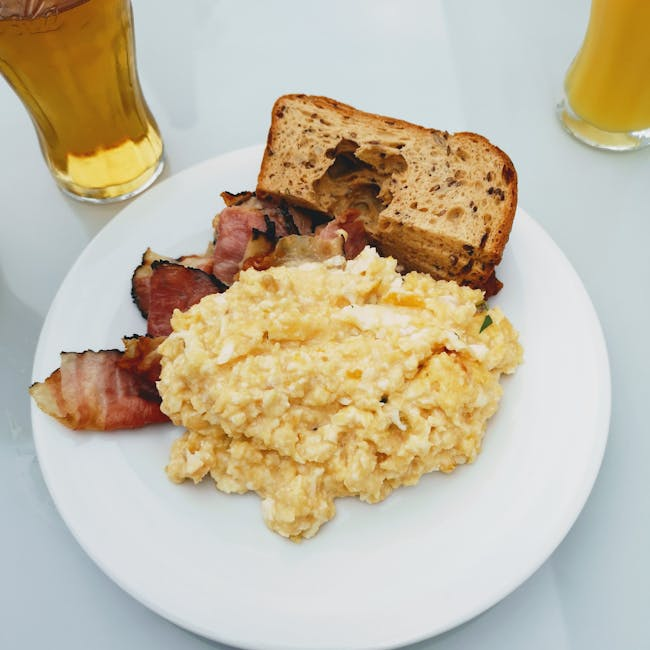

← Back to all nutrition guides
How To Eat Out And Still Lose Weight
A realistic guide for busy professionals over 40.
Eating out while trying to lose weight can feel daunting, especially for men aged 40-65 who may not want to count calories. However, with the right mindset and strategies, it's possible to enjoy dining out without derailing your weight loss goals. By making mindful choices and focusing on what you truly enjoy, you can savor meals with friends or family and still maintain a healthy lifestyle. This article will provide realistic approaches for eating out while supporting your journey to weight loss. You'll discover simple strategies that allow you to enjoy meals and make healthier choices in any restaurant setting.
Want a personalized version of this strategy?
Try the AI Food Coach
Why How To Eat Out And Still Lose Weight Matters
For men in the 40-65 age group, maintaining a healthy weight is critical for overall well-being. As metabolism slows down with age, excess weight gain can lead to serious health issues such as diabetes, heart disease, and joint problems. Eating out can often introduce high-calorie dishes that sabotage weight loss ambitions, making it essential to develop effective strategies. Focusing on nutrition when dining out not only aids in weight loss but also helps promote a healthier lifestyle by encouraging better food choices. Enjoying meals out with loved ones is an important social aspect of life, contributing to emotional well-being. By learning how to eat out wisely, men can continue enjoying their dining experiences without compromising their health objectives. This balance is vital—it fosters a sustainable approach to eating that can ultimately lead to long-term weight management and improved quality of life.
Simple Strategy
- Choose grilled or baked options over fried foods to reduce calorie intake.
- Opt for smaller portion sizes or share entrees to control portions.
- Focus on vegetables and salads as a way to fill up without excessive calories.
These strategies work best when personalized to your lifestyle and goals.
Build Your Personalized Nutrition Plan
Most people know what foods are healthy. The hard part is knowing what to eat today. Today's Food Coach creates a simple, personalized daily plan based on your goals and lifestyle.
Start Your PlanExample Day of Eating
Start your day with a light breakfast such as Greek yogurt topped with fresh fruit. For lunch, you could choose a salad with grilled chicken and a vinaigrette dressing. When dining out for dinner, select fish or lean meat with steamed vegetables, making sure to avoid heavy sauces.
Common Mistakes
- Underestimating portion sizes when dining out.
- Choosing calorie-dense appetizers instead of healthier options.
- Drinking sugary beverages that add unnecessary calories.
Practical Tips
- Plan ahead by reviewing the menu online to identify healthier options.
- Prioritize whole foods and lean proteins when ordering.
- Stay hydrated by drinking water before and during your meal to help control hunger.
Frequently Asked Questions
Is it possible to enjoy dining out while losing weight?
Yes, by making mindful choices and focusing on healthier options, you can enjoy dining out without compromising your weight loss efforts.
Should I skip appetizers when eating out?
Not necessarily, but choose lighter appetizers like salads or vegetable dishes instead of fried or creamy options.
How can I maintain portion control while dining out?
Consider sharing meals or asking for a smaller portion size to better control your calorie intake.
Related Nutrition Guides
- Why Is It Harder To Lose Weight After 40
- How To Stop Late Night Snacking
- What To Do Instead Of Eating At Night
Try Today's Food Coach
Generate a personalized meal strategy based on your lifestyle and goals.
Try the AI Food Coach